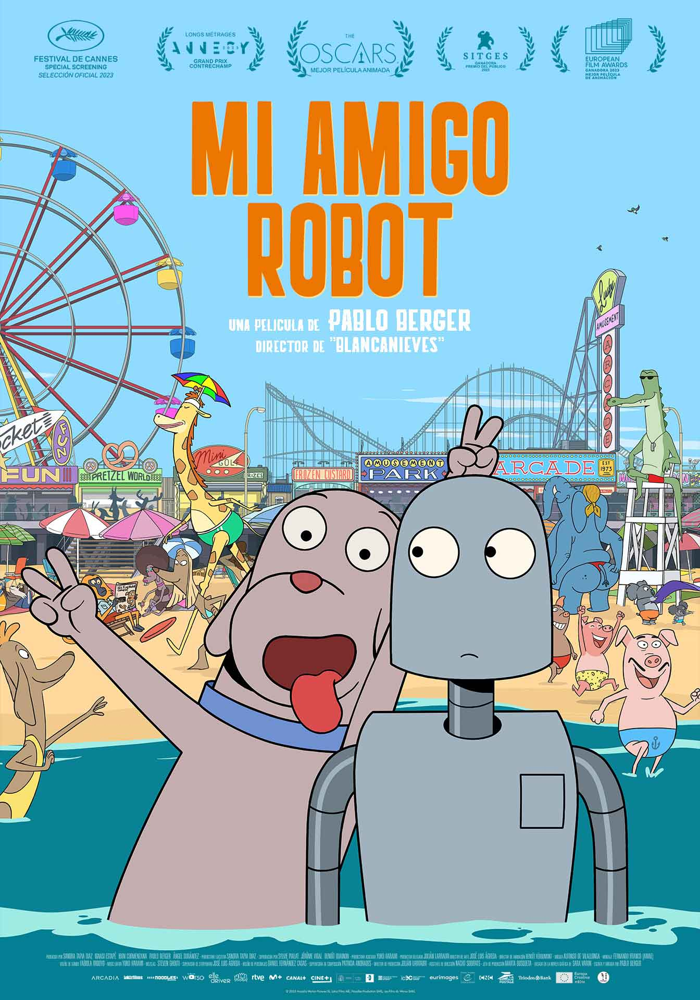
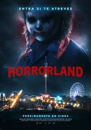
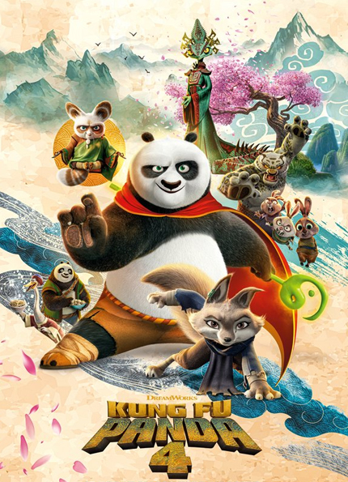
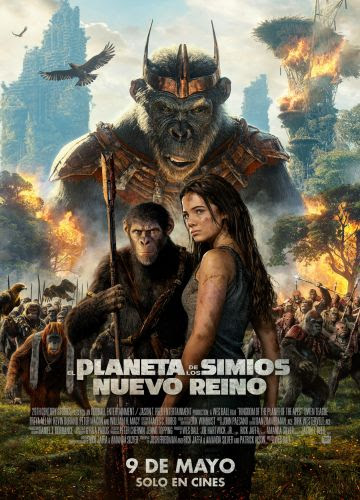

Cuenta la historia de DOG, un perro solitario que vive en Nueva York, Un dia decide contruir un robot como su amigo.
Su amistad crece, hasta hacerse inseparables. Al ritmo del Nueva York de los ochenta, esta encantadora pelicula nos
demuestra que lo mas bello de la vida son los amigos.

La primera profesia
Cuando una joven estadounidense es enviada a Roma para iniciar una vida de servicio a la Iglesia, se topa con una oscuridad que pone
en cuestión su propia fe y descubre una conspiración aterradora que espera provocar el nacimiento de la encarnación del mal. Una precuela
de 'La profecía'. (1976).
Profesion Peligro
Colt Seavers es un doble de riesgo que dejó el negocio un año antes para centrarse en su salud física y mental. Lo reclutan nuevamente cuando
la estrella de una película de estudio de mega presupuesto, dirigida por su ex, desaparece.
HORRORLAND
A Fiona, la encargada de un parque, le toca ocuparse de unos antiguos amigos de la escuela secundaria que han ganado una visita previa
exclusiva de Halloween a un parque de atracciones, una noche entera, para ellos solos. Algodón de azúcar, palomitas de maíz y tiovivos se suceden
unos detrás de otros, pero la diversión se convierte rápidamente en una auténtica pesadilla cuando se dan cuenta de que no están solos en el parque.
Todos sus pecados del pasado vuelven cuando se dan cuenta de que solo haciéndoles frente podrán sobrevivir.

KUNG FU PANDA 4
Sigue a Po en sus asombrosas aventuras en la antigua China, cuyo amor por el kung fu solo se compara con un apetito insaciable.

El planeta de los simios: Nuevo reino
Ambientada varias generaciones en el futuro tras el reinado de César, en la que los simios son la especie dominante que vive en armonía
y los humanos se han visto reducidos a vivir en la sombra. Mientras un nuevo y tiránico líder simio construye su imperio, un joven simio emprende un angustioso
viaje que le llevará a cuestionarse todo lo que sabe sobre el pasado y a tomar decisiones que definirán el futuro de simios y humanos por igual.
